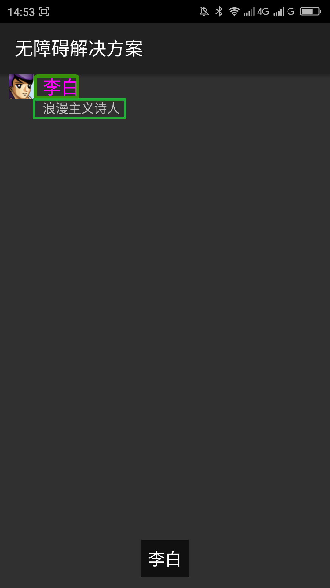

给控件设置焦点____20160509
【问题描述】
除了用触摸屏浏览app之外，android应用程序还可以用键盘、轨迹球等设备进行浏览，这些设备可以方便视障用户、肢体残疾的用户更好的使用android。但是android应用程序中的控件没有焦点用这些设备就不能很好的浏览应用程序中的控件、使用应用程序。控件没有焦点同时也会导致视障用户在开启屏幕阅读器的时候用触摸屏无法浏览到没有焦点的控件、操作那些没有焦点的控件。
【问题解决方案描述】
Android提供了android:focusable属性来启用焦点导航当等于true的时候是启用焦点导航，同时android提供了在触摸屏下启用焦点导航的属性android:focsableInTouchMode，此属性等于true的时候触摸屏下启用焦点导航。
【解决方案】
下面代码中利用android:focusable、android:focusableInTouchMode两个属性启用焦点导航。 注：一般情况下不要在父试图中启用焦点导航，这样会导致大焦点出现；
复制内容
【前后效果图对比】
|  | |
| 优化前，触摸有两个焦点：“李白”“浪漫主义诗人”； | 优化后，触摸有三个焦点：“李白的头像”“李白”“浪漫主义诗人”； |